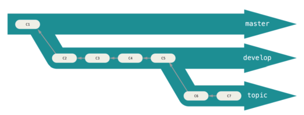

    <!-- Contact Section -->
    <section id="contact" class="container content-section text-center">
        <div class="row">
            <div class="col-lg-8 col-lg-offset-2">
                <h2>远程仓库</h2>
                  <p>
                1 创建 ssh key: <br>
                ssh -keygen -t rsa -C"123456@qq.com"<br>
                2.进入git hub(打开 设置->sshkey选项->点击add ssh key ->在文本里添加 id.rea.pub)<br>
                3. cd ~/.ssh  进入目录 

                 4. cat id_rsa.pub(得到秘钥)<br>
                 5. 粘贴到github(把秘钥)<br><br>
                 <h2>添加远程仓库</h2>
                  1.打开 git hub 新建一个项目<br>

                  2.添加命令(git remote add origin git@github.com:michaellliao/learn.git)<br>

                   注意: origin远程库的名字,可以更改,把michaelliao换成自己的github账户名/earn. git(可以通过复制git hub 里面的)<br>

                3. git push -u origin master <br>

                注意: origin必须和上面的相同,否则不成功.  git  push 命令.实际吧master推送到远方
                由于第一次推送的master是空的,所以我们加上 -u git不但会吧本地的master推送到远程新的master,还会把本地master远程master关联起,以后可以省略<br><br>
                   <h2>从远程克隆</h2>
                     1.首先登录git hub ,创建一个新的仓库,名字叫  gitskills :<br>

            2. 我们勾选 initialize thisrepository with a readme, 这样git hub git hub  会自动为我们创建一个 readme.md文件,创建完毕后,可以看到readme.md 文件<br>

   3. 下一步 用命令 git clone  克隆到本地库:<br>

      git clone git@github.com:michaeliao/gitshkills.git<br>

      注: michaeliao 替换为:github 用户名 : <br>

   4. cd  gitskills<br>

   5. ls<br>

      小结: 要克隆一个仓库,首先必须知道仓库的地址,然后 git

      clone 命令克隆 ,git支持多种协议, 包括https,订单通过

      ssh 支持的原声 git 协议速度最快.<br>

     <a  style = "color :red;" >注</a>    :我们可以在远程仓库复制下来(链接->具体为点击仓库->然后点击克隆或下载->他会弹出一个链接地址->我们只需复制在终端输入 ls->git clone 后面写链接地址就可以克隆远程了).<br><br>
     <h2>分支管理</h2>

​    解释: 分支就是科幻电影了的平行宇宙,当你正在电脑面前努力学习git的时候另一个你正在另一个平行宇宙努力学习,两个你不见面互补干扰,一单结合就把两个人所学的融合在一起我理解的是就是分身,两个人练两种武功,平时,互不干扰,自己忙自己的,一旦融合就会把他们所学的武功合二为一)<br>

   1 区别: 给他的分之与众不同的是:无论创建,切换和删除分支,git在

1秒钟内就能完成,无论是1个版本还是一万个版本.<br><br>
     <h2>一创建与合并分支</h2>
 <center>
   <table border="1px"  width="800px">
    <tr>
       <td>创建合并命令</td>
       <td>命令</td>> 
    </tr>
    <tr>
       <td>git checkout -b</td>
       <td>参数表示其创建并切换</td>> 
    </tr>
        <tr>
       <td>git branch</td>
       <td>查看当前分支</td>> 
    </tr>
        <tr>
       <td>git  merge</td>
       <td>用于合并指定分支到当前分支git</td>> 
    </tr>
   </table>
</center><br>
   


 
              
                    
                </p>
                <p><a href="mailto:{{ site.email }}">{{     site.email }}</a>
                </p>
                <ul class="list-inline banner-social-buttons">
                    {% for network in site.social %}
                    <li>
                        <a href="{{ network.url }}" class="btn btn-default btn-lg"><i class="fa fa-{{ network.title }} fa-fw"></i> <span class="network-name">{{ network.title }}</span></a>
                    </li>
                    {% endfor %}
                </ul>
            </div>
        </div>
    </section>